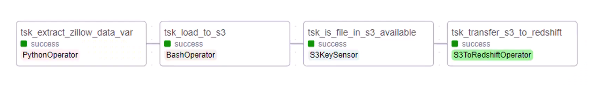
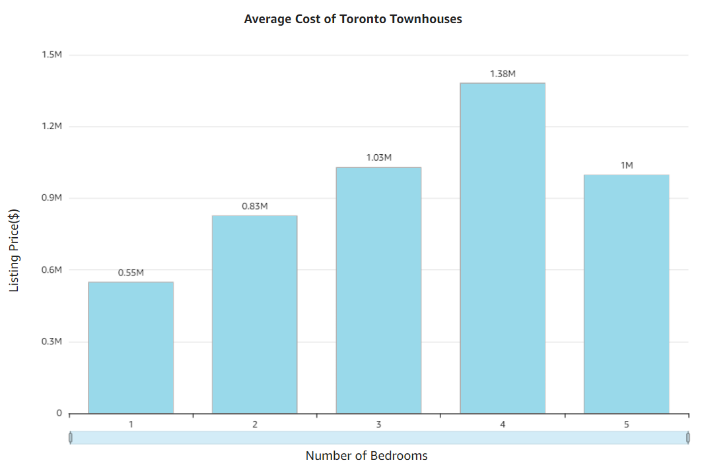
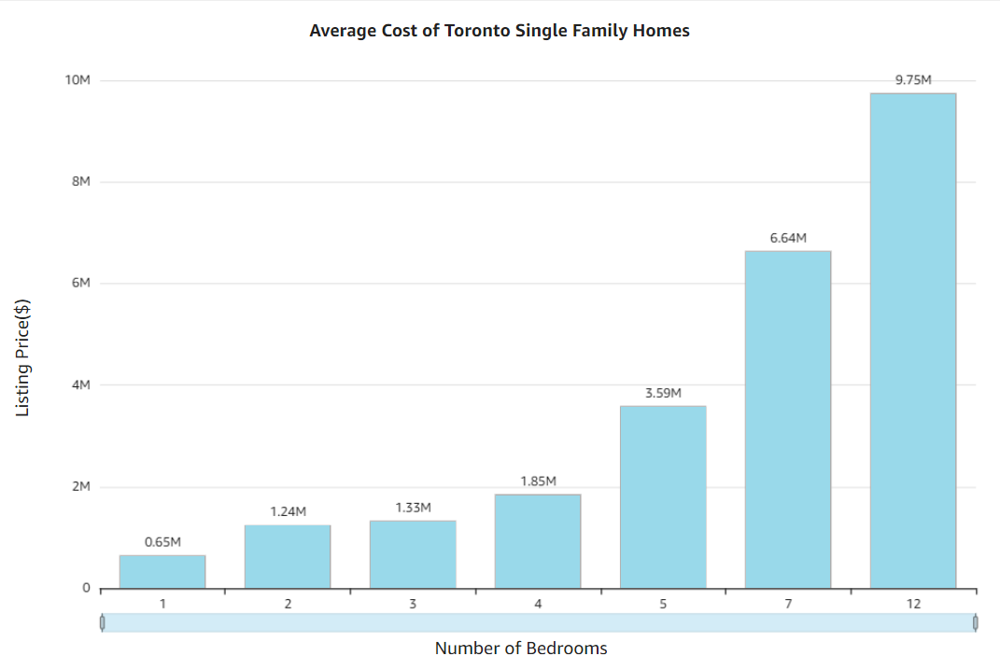
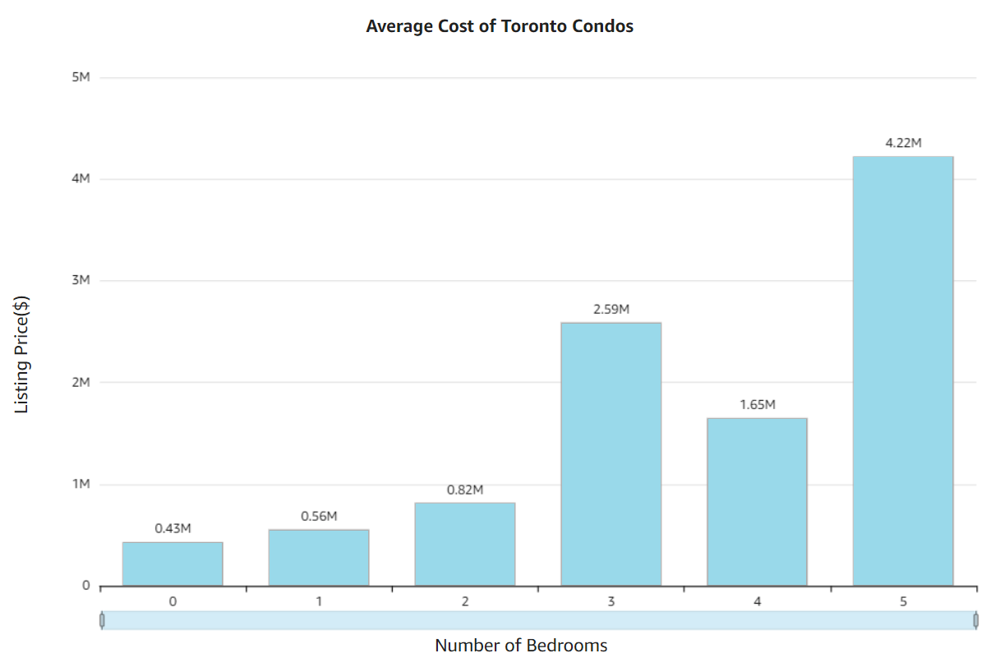

Zillow ETL Pipeline
Introduction
I built an end-to-end ETL pipeline for processing Toronto's real estate data from Zillow, using Python and various AWS services. This project involves clearly defined stages, from extracting data via the Zillow Rapid API to creating visualizations in Amazon QuickSight. Each step of the process is orchestrated using Apache Airflow running on an Amazon EC2 instance, ensuring seamless task automation and dependency management.
The pipeline stages include:
- Data Extraction: Retrieving raw data from the Zillow Rapid API.
- Data Loading: Storing raw data in a secure S3 Landing Zone.
- Intermediate Processing: Using AWS Lambda to copy data to an Intermediate Zone and transform it.
- Data Validation: Verifying the presence of transformed data in a final S3 bucket.
- Data Loading into Redshift: Analyzing the transformed data in Amazon Redshift.
- Visualization: Generating dashboards in Amazon QuickSight.
Workflow Overview
1. Extract Data
- Used Python to connect to the Zillow Rapid API and extract real estate property data.
- Stored the raw data temporarily on an Amazon EC2 instance.
2. Load Raw Data into S3 (Landing Zone)
- Transferred the raw data from EC2 to an Amazon S3 bucket (Landing Zone) using a Bash operator in Apache Airflow.
- The Landing Zone ensures the original data remains pristine and untampered.
3. Data Copy and Transformation
- Triggered an AWS Lambda function whenever new data was added to the Landing Zone.
- Step 1: Copied the raw data from the Landing Zone to an Intermediate Zone bucket in S3.
- Step 2: Triggered another Lambda function to clean and transform the data by retaining relevant columns and converting it into a CSV format.
- Stored the transformed data in a third bucket (Processed Zone).
4. Data Validation
- Used an S3 Key Sensor in Apache Airflow to ensure the transformed data was present in the Processed Zone before proceeding to the next stage.
5. Load Transformed Data into Amazon Redshift
- Transferred the validated and transformed data from the Processed Zone in S3 to an Amazon Redshift cluster.
- Enabled querying and analysis of the processed data.
6. Data Visualization
- Connected Amazon QuickSight to the Redshift cluster to create interactive dashboards.
- These visualizations showcased trends in real estate data, including property price distributions, geographical insights, and other metrics.
Orchestration with Apache Airflow
All pipeline tasks were orchestrated using Apache Airflow running on an Amazon EC2 instance. This setup allowed me to:
- Automate each stage of the ETL process.
- Ensure task dependencies were respected.
- Monitor and recover from errors efficiently.
DAG Overview
Figure 1: ETL Pipeline DAG Workflow
Visualizations
Figure 1: Average Cost of Toronto Townhouses
Figure 2: Average Cost of Toronto Single Family Homes
Figure 3: Average Cost of Toronto Condos
